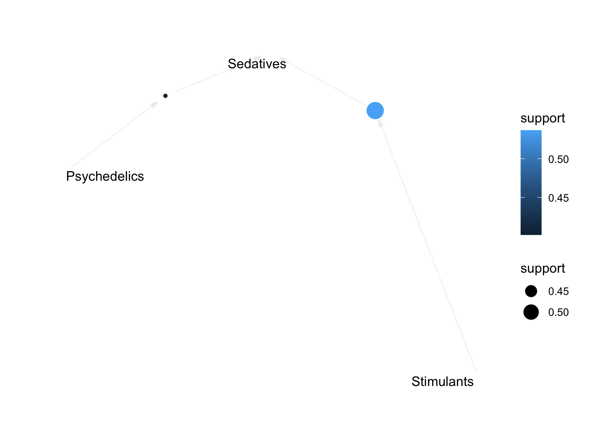
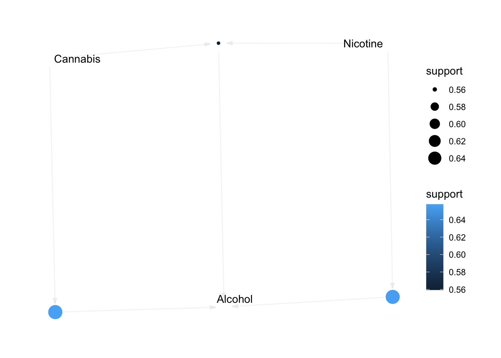
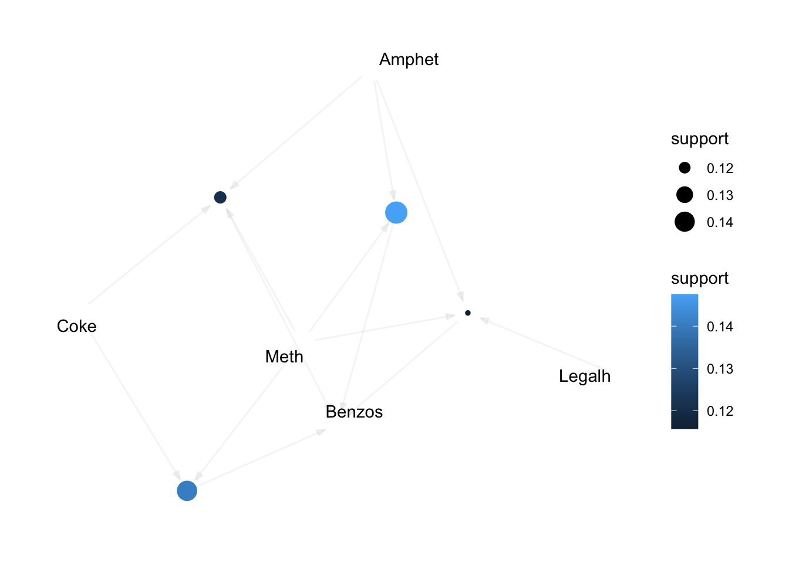
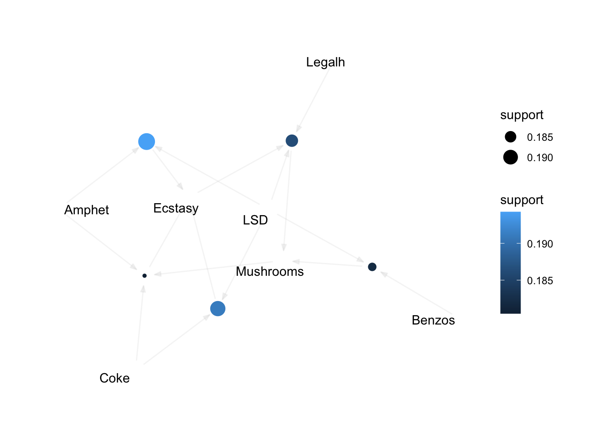

| ID | Age | Gender | Education | Country | Ethnicity | Nscore | Escore | Oscore | AScore | Cscore | Impulsive | SS | Alcohol | Amphet | Amyl | Benzos | Caff | Cannabis | Choc | Coke | Crack | Ecstasy | Heroin | Ketamine | Legalh | LSD | Meth | Mushrooms | Nicotine | Semer | VSA |
|---|---|---|---|---|---|---|---|---|---|---|---|---|---|---|---|---|---|---|---|---|---|---|---|---|---|---|---|---|---|---|---|
| 2 | 25-34 | M | Doctorate degree | UK | White | -0.67825 | 1.93886 | 1.43533 | 0.76096 | -0.14277 | -0.71126 | -0.21575 | CL5 | CL2 | CL2 | CL0 | CL6 | CL4 | CL6 | CL3 | CL0 | CL4 | CL0 | CL2 | CL0 | CL2 | CL3 | CL0 | CL4 | CL0 | CL0 |
| 3 | 35-44 | M | Professional certificate/ diploma | UK | White | -0.46725 | 0.80523 | -0.84732 | -1.62090 | -1.01450 | -1.37983 | 0.40148 | CL6 | CL0 | CL0 | CL0 | CL6 | CL3 | CL4 | CL0 | CL0 | CL0 | CL0 | CL0 | CL0 | CL0 | CL0 | CL1 | CL0 | CL0 | CL0 |
| 4 | 18-24 | F | Masters degree | UK | White | -0.14882 | -0.80615 | -0.01928 | 0.59042 | 0.58489 | -1.37983 | -1.18084 | CL4 | CL0 | CL0 | CL3 | CL5 | CL2 | CL4 | CL2 | CL0 | CL0 | CL0 | CL2 | CL0 | CL0 | CL0 | CL0 | CL2 | CL0 | CL0 |
| 5 | 35-44 | F | Doctorate degree | UK | White | 0.73545 | -1.63340 | -0.45174 | -0.30172 | 1.30612 | -0.21712 | -0.21575 | CL4 | CL1 | CL1 | CL0 | CL6 | CL3 | CL6 | CL0 | CL0 | CL1 | CL0 | CL0 | CL1 | CL0 | CL0 | CL2 | CL2 | CL0 | CL0 |
| 6 | 65+ | F | Left school at 18 years | Canada | White | -0.67825 | -0.30033 | -1.55521 | 2.03972 | 1.63088 | -1.37983 | -1.54858 | CL2 | CL0 | CL0 | CL0 | CL6 | CL0 | CL4 | CL0 | CL0 | CL0 | CL0 | CL0 | CL0 | CL0 | CL0 | CL0 | CL6 | CL0 | CL0 |
| 7 | 45-54 | M | Masters degree | USA | White | -0.46725 | -1.09207 | -0.45174 | -0.30172 | 0.93949 | -0.21712 | 0.07987 | CL6 | CL0 | CL0 | CL0 | CL6 | CL1 | CL5 | CL0 | CL0 | CL0 | CL0 | CL0 | CL0 | CL0 | CL0 | CL0 | CL6 | CL0 | CL0 |
Data Science as a Field Project
Statement of question and interest
Question: *What factors in personality and prior drug use are predominantly associated with the use of specific drugs – especially hard drugs?*
For our project we are interested in drug consumption and the association to personality and behavior. For instance, we want to further evaluate the different types of risk to be for each drug. We can split up the drugs based on how they are scheduled or classified as controlled substances. We are primarily interested in distinguishing which factors in personality and prior drug use are predominantly associated with the use of specific drugs. Secondly, we want to assess which factors are predominantly associated with hard drugs.
Source & Dataset Description
We got our database from here, see Drug Consumptions (UCI)
You can access our data here, see GitHub
Dataset Contents:
There are 12 attributes that are categorized based on their background demographic and personality measurements. These attributes are assessed across 18 central nervous system (CNS) psychoactive drugs. The drugs selected includes both illicit and licit.
Featured Attributes for Quantified Data
ID: total number of 1885 records in this database
Age: participant’s age
Gender: binary of only fale or female
Education: participant’s level of education
Country: participant’s country of origin
Ethnicity: participant’s ethnicity
Featured Attributes for Personality measurements (NEO-FFI-R)
Nscore: neuroticism
Escore: extraversion
Oscore: openness to experience.
Ascore: agreeableness.
Cscore: conscientiousness.
Impulsive: impulsiveness (measured by BIS-11)
SS: sensation seeing (measured by ImpSS)
Consumption usage of 18 legal and illegal drugs
Alcohol: alcohol consumption
Amphet: amphetamines consumption
Amyl: nitrite consumption
Benzos: benzodiazepine consumption
Caff: caffeine consumption
Cannabis: marijuana consumption
Choc: chocolate consumption
Coke: cocaine consumption
Crack: crack cocaine consumption
Ecstasy: ecstasy consumption
Heroin: heroin consumption
Ketamine: ketamine consumption
Legalh: legal highs consumption
LSD: LSD consumption
Meth: methadone consumption
Mushroom: magic mushroom consumption
Nicotine: nicotine consumption
Semer: class of fictitious drug Semeron consumption (i.e. control)
VSA: class of volatile substance abuse consumption
Rating’s for Drug Use
CL0: Never Used
CL1: Used over a Decade Ago
CL2: Used in Last Decade
CL3: Used in Last Year 59
CL4: Used in Last Month
CL5: Used in Last Week
CL6: Used in Last Day
Examining the Data
Dataframe
Subset dataframe
| Alcohol | Amphet | Amyl | Benzos | Cannabis | Coke | Crack | Ecstasy | Heroin | Ketamine | Legalh | LSD | Meth | Mushrooms | Nicotine | VSA |
|---|---|---|---|---|---|---|---|---|---|---|---|---|---|---|---|
| CL5 | CL2 | CL2 | CL0 | CL4 | CL3 | CL0 | CL4 | CL0 | CL2 | CL0 | CL2 | CL3 | CL0 | CL4 | CL0 |
| CL6 | CL0 | CL0 | CL0 | CL3 | CL0 | CL0 | CL0 | CL0 | CL0 | CL0 | CL0 | CL0 | CL1 | CL0 | CL0 |
| CL4 | CL0 | CL0 | CL3 | CL2 | CL2 | CL0 | CL0 | CL0 | CL2 | CL0 | CL0 | CL0 | CL0 | CL2 | CL0 |
| CL4 | CL1 | CL1 | CL0 | CL3 | CL0 | CL0 | CL1 | CL0 | CL0 | CL1 | CL0 | CL0 | CL2 | CL2 | CL0 |
| CL2 | CL0 | CL0 | CL0 | CL0 | CL0 | CL0 | CL0 | CL0 | CL0 | CL0 | CL0 | CL0 | CL0 | CL6 | CL0 |
| CL6 | CL0 | CL0 | CL0 | CL1 | CL0 | CL0 | CL0 | CL0 | CL0 | CL0 | CL0 | CL0 | CL0 | CL6 | CL0 |
Cleaning the data
| Alcohol | Amphet | Amyl | Benzos | Cannabis | Coke | Crack | Ecstasy | Heroin | Ketamine | Legalh | LSD | Meth | Mushrooms | Nicotine | VSA | Psychedelics | Sedatives | Stimulants |
|---|---|---|---|---|---|---|---|---|---|---|---|---|---|---|---|---|---|---|
| 1 | 1 | 1 | 0 | 1 | 1 | 0 | 1 | 0 | 1 | 0 | 1 | 1 | 0 | 1 | 0 | 1 | 1 | 1 |
| 1 | 0 | 0 | 0 | 1 | 0 | 0 | 0 | 0 | 0 | 0 | 0 | 0 | 0 | 0 | 0 | 0 | 1 | 0 |
| 1 | 0 | 0 | 1 | 1 | 1 | 0 | 0 | 0 | 1 | 0 | 0 | 0 | 0 | 1 | 0 | 0 | 1 | 1 |
| 1 | 0 | 0 | 0 | 1 | 0 | 0 | 0 | 0 | 0 | 0 | 0 | 0 | 1 | 1 | 0 | 1 | 1 | 0 |
| 1 | 0 | 0 | 0 | 0 | 0 | 0 | 0 | 0 | 0 | 0 | 0 | 0 | 0 | 1 | 0 | 0 | 1 | 0 |
| 1 | 0 | 0 | 0 | 0 | 0 | 0 | 0 | 0 | 0 | 0 | 0 | 0 | 0 | 1 | 0 | 0 | 1 | 0 |
Analysis
Using Frequency Pattern Analysis to find common patterns in drug use.
Apriori
Parameter specification:
confidence minval smax arem aval originalSupport maxtime support minlen
0.9 0.1 1 none FALSE TRUE 5 0.4 2
maxlen target ext
10 rules TRUE
Algorithmic control:
filter tree heap memopt load sort verbose
0.1 TRUE TRUE FALSE TRUE 2 TRUE
Absolute minimum support count: 753
set item appearances ...[0 item(s)] done [0.00s].
set transactions ...[16 item(s), 1884 transaction(s)] done [0.00s].
sorting and recoding items ... [5 item(s)] done [0.00s].
creating transaction tree ... done [0.00s].
checking subsets of size 1 2 3 done [0.00s].
writing ... [3 rule(s)] done [0.00s].
creating S4 object ... done [0.00s]. lhs rhs support confidence coverage lift
[1] {Nicotine} => {Alcohol} 0.6560510 0.9786223 0.6703822 1.015267
[2] {Cannabis} => {Alcohol} 0.6576433 0.9794466 0.6714437 1.016122
[3] {Cannabis, Nicotine} => {Alcohol} 0.5594480 0.9850467 0.5679406 1.021932
count
[1] 1236
[2] 1239
[3] 1054 Apriori
Parameter specification:
confidence minval smax arem aval originalSupport maxtime support minlen
0.9 0.1 1 none FALSE TRUE 5 0.18 2
maxlen target ext
10 rules TRUE
Algorithmic control:
filter tree heap memopt load sort verbose
0.1 TRUE TRUE FALSE TRUE 2 TRUE
Absolute minimum support count: 339
set item appearances ...[0 item(s)] done [0.00s].
set transactions ...[13 item(s), 1884 transaction(s)] done [0.00s].
sorting and recoding items ... [10 item(s)] done [0.00s].
creating transaction tree ... done [0.00s].
checking subsets of size 1 2 3 4 done [0.00s].
writing ... [5 rule(s)] done [0.00s].
creating S4 object ... done [0.00s]. lhs rhs support confidence coverage
[1] {Benzos, LSD} => {Mushrooms} 0.1820594 0.9122340 0.1995754
[2] {Amphet, LSD} => {Ecstasy} 0.1942675 0.9081886 0.2139066
[3] {Coke, LSD} => {Ecstasy} 0.1910828 0.9326425 0.2048832
[4] {Ecstasy, Legalh, LSD} => {Mushrooms} 0.1863057 0.9046392 0.2059448
[5] {Amphet, Coke, Mushrooms} => {Ecstasy} 0.1804671 0.9264305 0.1947983
lift count
[1] 2.476439 343
[2] 2.278332 366
[3] 2.339678 360
[4] 2.455822 351
[5] 2.324095 340 Apriori
Parameter specification:
confidence minval smax arem aval originalSupport maxtime support minlen
0.9 0.1 1 none FALSE TRUE 5 0.11 2
maxlen target ext
10 rules TRUE
Algorithmic control:
filter tree heap memopt load sort verbose
0.1 TRUE TRUE FALSE TRUE 2 TRUE
Absolute minimum support count: 207
set item appearances ...[0 item(s)] done [0.00s].
set transactions ...[11 item(s), 1884 transaction(s)] done [0.00s].
sorting and recoding items ... [10 item(s)] done [0.00s].
creating transaction tree ... done [0.00s].
checking subsets of size 1 2 3 4 5 done [0.00s].
writing ... [4 rule(s)] done [0.00s].
creating S4 object ... done [0.00s]. lhs rhs support confidence coverage lift
[1] {Coke, Meth} => {Benzos} 0.1406582 0.9330986 0.1507431 2.289007
[2] {Amphet, Meth} => {Benzos} 0.1475584 0.9084967 0.1624204 2.228656
[3] {Amphet, Coke, Meth} => {Benzos} 0.1210191 0.9500000 0.1273885 2.330469
[4] {Amphet, Legalh, Meth} => {Benzos} 0.1157113 0.9159664 0.1263270 2.246980
count
[1] 265
[2] 278
[3] 228
[4] 218 Apriori
Parameter specification:
confidence minval smax arem aval originalSupport maxtime support minlen
0.9 0.1 1 none FALSE TRUE 5 0.4 2
maxlen target ext
10 rules TRUE
Algorithmic control:
filter tree heap memopt load sort verbose
0.1 TRUE TRUE FALSE TRUE 2 TRUE
Absolute minimum support count: 753
set item appearances ...[0 item(s)] done [0.00s].
set transactions ...[3 item(s), 1884 transaction(s)] done [0.00s].
sorting and recoding items ... [3 item(s)] done [0.00s].
creating transaction tree ... done [0.00s].
checking subsets of size 1 2 done [0.00s].
writing ... [2 rule(s)] done [0.00s].
creating S4 object ... done [0.00s]. lhs rhs support confidence coverage lift count
[1] {Psychedelics} => {Sedatives} 0.4018047 0.9908377 0.4055202 1.017296 757
[2] {Stimulants} => {Sedatives} 0.5366242 0.9931238 0.5403397 1.019643 1011 Conclusion
One pattern found in the data is that people’s drug use tends to cluster around specific groups of drugs. Using Frequency Pattern (FP) analysis, popular drug groupings are found at various levels of popularity.
Scale for colour is already present.
Adding another scale for colour, which will replace the existing scale.
Scale for colour is already present.
Adding another scale for colour, which will replace the existing scale.
When looking at all drug relations, the most common ‘basket’ of drugs used in combination is the three most common drugs used: Alcohol, Cannabis, and Nicotine. While these three are often used together, they are also found to be the main drug used in combination with other, less common drugs. This shows their status as “gateway” drugs. Nearly everyone who uses some of the harder, less common drugs also uses one of these three.
Scale for colour is already present.
Adding another scale for colour, which will replace the existing scale.
When removing the three ‘gateway’ drugs from the market baskets, a new pattern emerges. Around 20% of drug users use a combination of drugs including Cocaine, Amphetamine, LSD, Mushrooms, Benzos and Ecstasy (MDMA). These drugs are a varied group, and could be considered “medium” drugs, although some of them, such as Amphetamines and Benzodiazapines, are as volatile as the ‘harder’ drugs included in this data table. Within this group of drugs, Psilocybin and Ecstasy appear to act as the “gateway”.
Scale for colour is already present.
Adding another scale for colour, which will replace the existing scale.
Group Biases -
Some personal biases that we can acknowledge from this project and dataset are the “Drugs” listed. We would have refrained from classifying a handful of the drugs presented and would not have included them in the original dataset. Precisely alcohol, caffeine, chocolate, and possibly legal highs.
A possible explanation to our bias, is due to how prevalent or not these specifics drugs are in our world. Alcohol, caffeine, chocolate, and let’s say marijuana may be more accessibly available, depending on where you live, than let’s say meth, heroin, or benzos, and so forth.
Another example of bias is social pressure and cultural differences. How that may influence our unconscious biases of different drugs. For example marijuana and psilocybin are becoming popular alternative drugs to use for medical and recreational purposes in the U.S., but that may not reflect the same for in the U.K. or Australia per say. How we perceive the classification and use of these drugs holds lots of bias.
Lastly, the word “drug(s)” carries a negative connotation behind it. More often than not one mind jumps to 1) illegal, 2) substance use disorder (SUD), 3) problematic. Again, a lot of these are associated with more illicit drugs like cocaine, meth, heroin, etc., not so much with alcohol, chocolate, caffeine, and marijuana. How we perceive these drugs is a bias of itself. If we were to not include some of these drugs in the dataset, that would be unethical of us as a data scientist.
SessionInfo
R version 4.2.2 (2022-10-31)
Platform: x86_64-apple-darwin17.0 (64-bit)
Running under: macOS Big Sur ... 10.16
Matrix products: default
BLAS: /Library/Frameworks/R.framework/Versions/4.2/Resources/lib/libRblas.0.dylib
LAPACK: /Library/Frameworks/R.framework/Versions/4.2/Resources/lib/libRlapack.dylib
locale:
[1] en_US.UTF-8/en_US.UTF-8/en_US.UTF-8/C/en_US.UTF-8/en_US.UTF-8
attached base packages:
[1] stats graphics grDevices utils datasets methods base
other attached packages:
[1] arulesViz_1.5-1 arules_1.7-5 Matrix_1.5-1 forcats_0.5.2
[5] stringr_1.4.1 dplyr_1.0.10 purrr_0.3.5 readr_2.1.3
[9] tidyr_1.2.1 tibble_3.1.8 ggplot2_3.4.0 tidyverse_1.3.2
loaded via a namespace (and not attached):
[1] viridis_0.6.2 httr_1.4.4 viridisLite_0.4.1
[4] tidygraph_1.2.2 jsonlite_1.8.3 ggraph_2.1.0
[7] modelr_0.1.9 assertthat_0.2.1 highr_0.9
[10] googlesheets4_1.0.1 cellranger_1.1.0 yaml_2.3.6
[13] ggrepel_0.9.2 pillar_1.8.1 backports_1.4.1
[16] lattice_0.20-45 glue_1.6.2 digest_0.6.30
[19] polyclip_1.10-4 rvest_1.0.3 colorspace_2.0-3
[22] htmltools_0.5.3 pkgconfig_2.0.3 broom_1.0.1
[25] haven_2.5.1 scales_1.2.1 tweenr_2.0.2
[28] tzdb_0.3.0 ggforce_0.4.1 timechange_0.1.1
[31] googledrive_2.0.0 generics_0.1.3 farver_2.1.1
[34] ellipsis_0.3.2 withr_2.5.0 cli_3.4.1
[37] magrittr_2.0.3 crayon_1.5.2 readxl_1.4.1
[40] evaluate_0.17 fs_1.5.2 fansi_1.0.3
[43] MASS_7.3-58.1 xml2_1.3.3 tools_4.2.2
[46] hms_1.1.2 gargle_1.2.1 lifecycle_1.0.3
[49] munsell_0.5.0 reprex_2.0.2 compiler_4.2.2
[52] rlang_1.0.6 grid_4.2.2 rstudioapi_0.14
[55] htmlwidgets_1.5.4 igraph_1.3.5 labeling_0.4.2
[58] rmarkdown_2.18 gtable_0.3.1 DBI_1.1.3
[61] graphlayouts_0.8.4 R6_2.5.1 gridExtra_2.3
[64] lubridate_1.9.0 knitr_1.40 fastmap_1.1.0
[67] utf8_1.2.2 stringi_1.7.8 Rcpp_1.0.9
[70] vctrs_0.5.0 dbplyr_2.2.1 tidyselect_1.2.0
[73] xfun_0.34